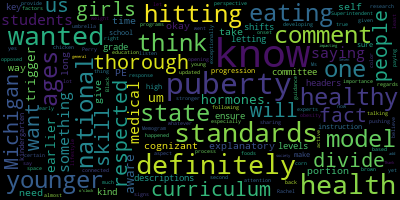
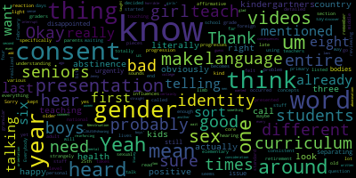
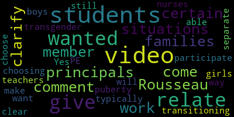
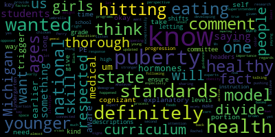
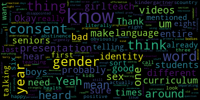
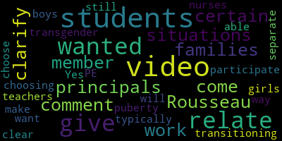

total time: 7.32 minutes
total words: 1131

total time: 3.71 minutes
total words: 497

{kind=link}
total time: 3.87 minutes
total words: 520
{kind=link}
total time: 5.37 minutes
total words: 871

{kind=link}
total time: 0.73 minutes
total words: 98

[Van der Kloot]: From my fellow school committee members.
[SPEAKER_07]: Perfect.
[SPEAKER_00]: Aloha.
[Van der Kloot]: Hi, Susie.
[SPEAKER_07]: From my fellow school committee members. Perfect.
[SPEAKER_00]: You got me today, Paulette.
[Van der Kloot]: Say that again, Paul?
[SPEAKER_00]: You got me.
[Van der Kloot]: Yep, I saw you and now I see Jenny. So with the three of us here, I'm gonna go ahead and start the meeting. If we could all rise to say the Pledge of Allegiance. I pledge allegiance to the flag of the United States of America and to the Republic for which it stands, one nation under God, indivisible, with liberty and justice for all. Thank you. I'm gonna take the roll. Member Graham? Here. Member Mustone is unable to attend, but Member Ruseau is attending in her absence.
[SPEAKER_00]: I'm here.
[Van der Kloot]: Thank you. And now I'm going to Read the paragraph. You would think at this point, we really should have taped it or something. We should have thought about something more clever, but I don't think any of us ever perceived we'd be reading it this long. Anyway, meeting date, May 31st, 5 to no later than 6.30. Please be advised. On 5-3, from 5 to 6-30, there will be a curriculum subcommittee. The purpose of this meeting is to review the health education and physical education curricula in the Medford public schools. Pursuant to Governor Baker's March 12, 2020 order suspending certain provisions of the open meeting law, and the Governor's March 15, 2020 order imposing strict limitations on the number of people that may gather in one place. This meeting of the Medford School Committee will be conducted via remote participation to the greatest extent possible. Specific information and the general guidelines for remote participation by members of the public and or parties with the right and or requirement to attend this meeting can be found on the City of Medford website at www.medfordmass.org. For this meeting, members of the public who wish to listen or watch the meeting may do so by assessing the meeting link contained herein. No in-person attendance of members of the public will be permitted, but every effort will be made to ensure that the public can adequately assess the proceedings in real time via technological means. In the event that we are unable to do so despite best efforts, we will post on the City of Medford and Medford Community Media websites and audio or video recording, transcript, or other comprehensive record of proceedings as soon as possible after the meeting. The meeting can be viewed through Medford Community Media on Comcast Channel 22 and Verizon Channel 43 at 4 p.m. There's a Zoom link. The meeting ID is 93008727811. OneTap Mobile is 19292056099. Okay. And having said all of that, the agenda is we will review the health education and physical education curricula. And with us today is the director of physical education and health education and assistant athletic director. That's a long title, Rachel, but Rachel Perry. So Rachel, I know that you have a presentation for us. Which area are we going to discuss first?
[Perry]: We're gonna start with health education. Okay. So can I turn it over to you now? Sure. I just need to be able to share my screen.
[Cushing]: You should be good to go.
[Perry]: Nope. Try it again. No, it's not allowing me to. Oh. Up there goes possibly. And for some reason, it's not coming up. Peter, can you do it from there?
[Cushing]: If you share the presentation with me, I can definitely do it.
[Perry]: OK, one second. There we go. All right, there we go. You should be getting it.
[SPEAKER_07]: share screen.
[Cushing]: Is it showing or no?
[Perry]: No.
[Cushing]: It was just up. To member Van der Kloot's point, you think 14 months in, we'd be through our technical difficulties.
[Perry]: There we go. We got it. Awesome. Thank you so much. Problem. All right. So I'll just talk a little bit about the presentation topics first, then we'll dive right in. First, we're going to talk a little bit about the MAS frameworks. We'll move on to national health education and physical education standards. And then we'll go into the elementary, middle and high school health curriculum and the physical education curriculum, talk a little bit about professional development and then moving forward 2021 and beyond. Moving to the next slide. And next one. Thank you. So I'm gonna talk a little bit about our program description and then we'll talk about the frameworks. The goal of the Physical Education and Health Education Department of Medford Public Schools is to enhance the well-being of the school community by creating a culture that integrates and balances the six dimensions of wellness, social, physical, intellectual, occupational, emotional, and spiritual. The department strives to encourage an active, healthy lifestyle, healthy decision-making, and a lifelong commitment to wellness. The Massachusetts state health education and physical education frameworks were last updated in 1999. Since these frameworks are not up to date, Medford Public Schools health education and physical education curriculum are aligned to the physical education, health education, and sexual education national standards. Medford Public Schools health curriculum is based on the seven health education skills. analyzing influences, accessing information, interpersonal communication, decision-making, goal-setting, practicing health-enhancing behaviors, and advocacy. We will revise our curricula to follow updated standards as they are released. You will find links to the state and national standards at the bottom of the slide. Right now, from what I understand, the Department of Education is doing an update and an edit to the frameworks, and then that's going to be put out for public opinion. Then they'll do another edit from there, and then they will be released. I don't know how long those will take, but once we get them, I will unpack them with my staff, and then we'll have to align what we're doing to those standards. Then I imagine I'll be coming before you all again to talk about what those changes are and what changes we need to make in our curriculum. You can go to the next slide, please. Thank you. Health education. So the skills-based Michigan model curriculum is used in grades K to 12. The health curriculum is also supplemented with the catch vaping curriculum and the mentors and violence prevention curriculum at the middle and high schools. Throughout this presentation, you can access the health and physical education scope and sequence by clicking on the grade levels in each slide. We can move to the next slide. Elementary health education. At the elementary level, the Michigan model social emotional units are taught at each grade level by classroom teachers. Social and emotional learning is a process through which children and adults acquire and effectively apply the knowledge, attitudes, and skills necessary to understand and manage emotions, set and achieve positive goals, feel and show empathy for others, establish and maintain positive relationships, and make responsible decisions. Goals of an SEL program are to promote students' self-awareness, self-management, social awareness, relationships, and responsible decision-making skills, and to improve students' attitudes and beliefs about self, others, and school. The social-emotional lessons start off in kindergarten with lessons on showing respect and caring for each other. Students learn how to apply please, thank you, excuse me, and I am sorry to appropriate situations. Students identify and practice strategies to forming friendships and learn how to identify caring touch, how to ask for a hug, how to respect other people's boundaries, including people of various ages, ethnic groups, and physical abilities. Students learn about different kinds of feelings and identify strategies to maintain strong feelings. Students will learn how to demonstrate giving and accepting a compliment and appreciation. And students demonstrate ways to be responsible at home in school and to identify and locate people who can help at home in school. Moving on to first grade. Students in first grade will also continue to apply skills and apply please, thank you, excuse me, and I am sorry to appropriate situations, giving and accepting a compliment Students will describe ways family members and friends help each other and explain the role of listening and paying attention in building and maintaining friendships. Students will apply effective listening and attention skills. Students will also explain decision-making and problem-solving steps and apply steps to making a decision or solve problems. In grade two, lessons consist of recognizing a variety of personal feelings and analyzing why it's important to identify failings to maintain personal health and healthy relationships. Students will also learn how to express failings respectfully. Students will identify and practice strategies for effective listening and identify ways to show respect for failings, rights, and property of others. Students identify caring touch as a comfortable and important part of a positive relationship and demonstrate the ability to manage strong failings, including anger. Students will identify and practice decision-making and problem-solving steps and identify people who can help them with their decision-making and problem-solving. In grade three, lessons consist of identifying characteristics of positive role models, analyzing how friends influence others' behaviors and well-being, describe the benefits of positive friendships, and practice strategies for making and keeping positive friends. Students recognize that each person has a unique talent or skills and identify a personal unique talent or skill in one of another person. Students will describe ways to show acceptance of differences and demonstrate the ability to support and respect people with differences. In fourth grade, social emotional learning lessons consist of describing strategies to manage strong failings, the practice, the use of positive self-talk to manage failings, Students will describe the effect of teasing and bullying on others and explain what to do if you or someone else is being teased or bullied. Students will express intentions to stop bullying as a bystander, someone who bullies others or the target of bullying. Students will practice making a decision or solving a problem using criteria to evaluate solutions and describe and apply characteristics and practice steps of conflict resolution. Moving on to grade five. The social emotional learning lessons consist of practicing strategies to continue managing strong failings to continue. They will describe how harassing and bullying behaviors are harmful to others. They will demonstrate how to communicate assertively and listen effectively and identify situations that might lead to trouble, including violence. Students will identify decision-making and problem solving steps and identify people who can help. Students will also analyze the importance of telling an adult if there are people who are in danger of hurting themselves or others and describe how to get help for that person. Students will also set a personal goal and plan steps necessary to achieve that goal. In fifth grade, we also have the PALS program that are presented by the Medford Police Department. That actually replaced our old DARE program that was also outdated. They also review lessons on self-awareness and management, responsible decision-making skills, understanding others, communication skills, and handling responsibilities and challenges. Another piece to fifth grade is actually presented by the nursing department. And that is one lesson that's introduction to puberty. And that is using the Procter and Gamble always changing curriculum. The assessments we are using in elementary school, part of the Michigan model, we have pre and post tests provided to assess our student learning. Moving on to middle school health, if we can go to the next slide. Thank you. So middle school health is taught by a health teacher and guidance Councilors. Guidance Councilors teach the social-emotional learning units at each grade level. And students have half a year of health and half a year of guidance in the middle school for sixth, seventh, and eighth graders. Starting with our sixth grade, I'll go through the units and just briefly describe each unit for you. The first one for sixth grade is drugs, tobacco, and alcohol. In this unit, students learn the effects of alcohol, drugs, and tobacco. and analyze why individuals choose to use or not use substances, and describe negative side effects of substances. Students learn effective persuasion skills to encourage others not to use tobacco, vapes, alcohol, and other drugs, and analyze family, peer, societal, and media influences on these substances. Students learn school policies and community laws related to the sale and use of tobacco, vapes, and drugs, and develop personal strategies to resist or refuse influences to use these substances. Students will recognize behaviors that indicate alcohol or other drug impairment in order to avoid riding with an impaired driver. Students will develop a warning label and slogan that addresses misconceptions and promotes the benefits of being substance free. Sixth grade next unit would be nutrition and physical activity. In this unit, students will learn about safe personal food handling practices to prevent foodborne illnesses and the benefits of healthy eating and being physically active. Students will learn federal dietary guidelines and the amount of physical activity recommended for one's age in order to achieve health benefits. Students will describe the relationship of self-perception, body image, body weight, and physical activity, and analyze how one's own perception of weight influences healthy eating and being physically active. Students will describe strategies for dealing with personal preferences, restrictions, and barriers, related to healthy eating, adequate sleep and physical activity. Moving on to the safety unit, students will learn about personal safety and advocate for others to stay safe in public, in a vehicle and on the internet. Students will explain and demonstrate the ability to escape safety hazards in public places when weapons or dangerous objects are present. Students will apply school rules and procedures to hypothetical school crisis situations. and learn the procedure for reporting the presence of weapons at school. Students will demonstrate the ability to ask a trusted adult for help when feeling personally threatened or unsafe, including while using the internet. Students will describe appropriate and inappropriate touch and explain the importance of respecting personal space and boundaries. Moving on to the social and emotional wellness unit for sixth grade. In this unit, students will analyze how friendships may involve positive and negative risks and analyze the importance of getting help from an adult when it is needed. Students will demonstrate effective listening strategies and recognize appropriate times to use assertive communication skills. Students identify criteria to determine whether another person is able to help one make a healthy decision and solve problems. Students will also learn conflict resolution and healthy decision-making and problem-solving skills. They will review common causes of stress and health effects of stress and identify strategies to reduce stress. Students will also develop a personal plan for stress management. The last unit in grade six is our sexual health unit. Students will identify anatomy and physiology of the male and female reproductive system and define puberty and the physical, social, and emotional changes that occur during puberty. Students will learn how to identify medically accurate sources of information about puberty, adolescent development, and sexuality. Students will define sexual intercourse and examine viewpoints of parents and other trusted adults regarding teen relationships, abstinence, and sexual decisions. Students will demonstrate the use of effective communication skills to support one's decision to abstain from sexual behaviors. moving on to grade seven health. The first unit in grade seven is tobacco free unit. And when I talk about tobacco free, we also talk about, uh, vaping devices as well. Um, vaping was added to this curriculum. We also added the catch curriculum, uh, two years ago in this unit, students will analyze how tobacco use vaping and exposure negatively impacts the users, friends, family members, and community members. Students will evaluate environmental and social factors, especially advertising strategies, which may influence young people to use tobacco and recognize risky situations that may lead to trouble. So one can protect oneself and others from tobacco use and vaping. Students will apply problem solving skills to hypothetical situations to protect oneself and others from tobacco and vaping use. Students will locate resources in one school and community and on the internet for information and assistance regarding tobacco and assess the validity of these resources. Students will demonstrate ways to support people who are abstaining from and are trying to quit tobacco or vaping use. Students will describe a variety of needs young people may have, explain healthy ways to meet these needs without the use of substances and make a personal commitment to remain tobacco free. Moving on to healthy eating and physical activity, building off what we did in sixth grade, students will summarize the benefits of healthy eating and being physically active and keeping the body hydrated and the potential consequences of not doing so. Students will be able to describe federal dietary guidelines for teenagers and the recommended amount of physical activity needed to achieve health benefits. Students will also evaluate a typical day's food intake according to the federal dietary guidelines for teenagers. Students will describe moderate intensity activities that are personally enjoyed and that can be enjoyed for a lifetime. Students will analyze the influence of television, computer, and video games on physical activity and demonstrate the ability to access resources regarding healthy weight management and unhealthy eating patterns and assess the validity of these resources. Students will use nutrition information on food labels to compare products and select food for specific dietary goals. Moving on to our safe and sound unit, students will examine different characteristics of stress and recognize personal stressors and understand and promote stress management techniques. Students will apply skills to manage strong feelings and demonstrate effective listening skills and the ability to be empathetic and to use I statements. Students will examine situations where adult help is needed, including depression. Students will also identify different forms of bullying, examine how to get help and the best way to reduce bullying and examine the role of bystanders in reducing bullying and examining school rules and state laws. Students will define and identify different forms of sexual harassment and examine how reporting sexual harassment is the best way to reduce it. Students will also apply four optional ways to manage conflict with friends, including walking away and examining the characteristics of a negative or abusive relationship. The last unit in grade seven is a sexual health unit. These units, the sexual health units were just updated in the spring. So we have one in each sixth, seventh and in eighth grade. They will define sexual abstinence, define sexually transmitted infections identify, sorry, sexually transmitted infection symptoms, types, and transmissions, locate sources of accurate information and assistance in one's community, analyze behaviors that may result in increased risk of STIs, summarize the benefits of staying within behavioral limits and remaining abstinent, set personal boundaries and limits related to physical intimacy and sexual behaviors, and create a plan to stay within behavioral limits and remaining abstinent. Moving on to eighth grade, this is the drug-free unit we're starting with in eighth grade. We're analyzing internal and external influences on behavior and social norms, analyzing how alcohol and other drugs and exposure negatively impact the user as well as friends, family members, and community members, and locate resources in one school and community and on the internet for information and assistance regarding alcohol and other drug use and assess the validity of these resources. Students will demonstrate how to follow directions for the correct use of over-the-counter and prescription medications and apply effective verbal and nonverbal communication skills to enhance health. Students will also demonstrate refusal skills to counter pressure the use of any kinds of substances. They'll recognize risky situations that may lead to trouble so that one can protect oneself and others from substance use. They will apply problem-solving skills to hypothetical situations to protect oneself and others from substance use as well. Moving on to nutrition and physical activity in eighth grade, building off of what we've done in sixth and seventh grade. Here students will describe how to access nutrition information about foods offered in restaurants in one's community, analyze characteristics of restaurant menus and methods of preparation of food. Students will evaluate the availability the ability of nutrient dense foods in the school cafeteria and throughout the school environment and demonstrate skills for dealing with pressure to eat in ways that are not healthy. Students will make a personal plan for improving one's nutrition and incorporating physical activity into their daily routines. The next unit is choosing who I am. Students will examine internal external factors that help to determine how a person acts and chooses he or she makes. Students will define the terms of value and character trait and describe how character traits impact behavior. Students will identify six essential character traits needed for personal success and well-being. And students will distinguish between passive aggressive and assertive communication skills and practice writing assertive statements. Students will define the term stress and identify sources of stress for middle school youth and examine signs of symptoms that indicate a person is under stress and create a menu for stress management techniques that students will identify. Students will also review the elements of empathetic listening and practice empathetic responses. Moving on to the last unit in the screen is sexual health. In this unit, students will define sexual intercourse and its relationship to human reproduction, describe signs and symptoms of pregnancy, Identify medically accurate resources about pregnancy prevention and reproductive health. Analyze situations where assertive communication and refusal skills can be used to avoid or escape risky situations. Demonstrate the use of effective communication skills to support one's decision to abstain from sexual behaviors. Describe the steps to using a condom correctly. Describe potential negative consequences for having sexual intercourse in ways to reduce risks, including abstinence and condom use, and to create a plan to reduce risks of having sex in the future. Assessments for middle school health, we are using rubrics and pre and post test provided with a Michigan model curriculum to assess student learning. We can move on to the next slide, I'm gonna be moving on to high school health education. High school health is taught by health teachers and students here at the high school have half a year of health and half a year of physical education every single year. We start off with Freshman Health, which is called Introduction to Health. For freshmen, this course is designed to introduce students to personal health concepts. Topics covered will include mental health awareness, healthy relationships, disease prevention and sexual education. Starting out with increase social emotional awareness through team building exercises. We do that at the start of every health class in high school, and that helps promote a safe learning environment with clear learning expectations. Students will understand what health and wellness, I'm sorry, the meaning of health and wellness, and begin to evaluate their own personal meaning of what those words mean to them. Students will visually represent the importance of health and wellness through a creation of a vision board to help motivate them to reach health-related goals. Moving on to a mental health lesson. Again, this is also brought through all four years at the high school, so I won't repeat it when I go over the next grades. At this level, students will identify stress, stressors, common causes of stress, side effects of stress, and ways to manage stress. Students will understand coping skills and what skills work for them. And they'll identify solutions to stress management and complete a personal support plan. The reason we do this through all four grades is stress can change from year to year, what affects them can change from year to year and what works on them can change from year to year. So that's why we introduce it in each year. The next unit here is healthy relationships. Students will describe criteria for selecting friends or potential romantic partners and maintaining healthy relationships. Students will explain the importance of healthy decision-making and relationships, describe different ways to communicate feelings. and students will learn the benefits of abstaining from sex. The next unit is sexually transmitted infections and diseases. Students will understand what lifestyle diseases are and how they can be prevented through making healthy choices. Students will understand how infectious diseases are spread and identify ways to prevent the spread of infection. Students will research a disease of their choice to understand what the disease, who the disease affects, how it can be spread, and how it can be prevented and treated. Students will understand STI symptoms and transmission and understand that abstinence and life monogamy are the most effective ways to prevent STIs. Avoiding risky behaviors is the next piece. Students will examine influences for risky behaviors. They will identify the law as an important influence in making decisions. Students will identify the legal age of consent, which is 16, and consequences of underage sex. Students will demonstrate communication skills and refusal skills to set limits. Students will identify ways to avoid risky situations, and they will describe ways to be a positive influence on their peers. The next unit is contraception and sexual health. Students will evaluate the economic cost of pregnancy and teen parenting. Students will conclude that pregnancy can be fully prevented by abstaining from sex. will identify ways to reduce the risks of pregnancy and STIs. Students will identify steps for correct condom use as a risk reduction strategy. And students will identify current contraceptive methods to reduce risk of pregnancy. Students will identify places to access contraceptive information, products, and services. And students will demonstrate effective limit setting and refusal skills. Students will learn about medical testing and advantages to early diagnosis of pregnancy and STIs. Moving on to our sophomore health education. For sophomores, this is healthy decision-making is the topic of sophomore health education. This course introduces students to healthy decision-making. Topics covered include how to deal with peer pressure, refusal skills, communication skills, drug, alcohol, and tobacco education, basic nutrition, body image, and fitness. As I said before, we have the introductory team building exercises, then we have the mental health lesson, then I'll go straight into the units. Nutrition and fitness. Students will comprehend the concepts consistent with the USDA guidelines related to eating healthy and physical activity. They'll be able to describe MyPlate and navigate choosemyplate.gov to identify daily servings for all food groups. Students will be able to demonstrate the ability to use information on food labels, to choose nutrient-dense food and beverages, and to avoid or limit foods and beverages that are low in nutrients or may impact health. Students will be able to demonstrate the ability to use information on nutrition fact label to choose healthier options when choosing to go out to eat at restaurants. Body image, students will understand body image, self-image, and body function. Students will understand and evaluate the effects that self-image has on our life They will identify and understand the things that influence our body image and understand that we perceive ourselves differently than others perceive us and be able to help be a positive influence on other's body image. Drugs, alcohol, peer pressure, refusal skills, and communication skills is the next unit. They'll describe long and short term consequences of substance use, clarify myths regarding substances, analyze internal and external pressures to use alcohol, tobacco, and other drugs, apply decision-making and problem-solving steps to hypothetical problems related to substances, and demonstrate skills to avoid or resist using these substances. Part of this is also the CATCH curriculum, which is the vaping curriculum that we also used in the middle school. They will review consequences and health hazards, review refusal skills and smart exit strategies to using vapes, develop a public service announcement that addresses misconceptions while promoting the benefits of being vape free. Moving on to junior health, it's called healthy lifestyles. And this course provides students with the tools needed to live a healthy lifestyle. Topics include stress management, goal setting, advanced nutrition, and consumer health. The goal setting unit, students will understand the components of SMART goals and ways to make goals. Students will identify steps in an action plan toward meeting a SMART goal, and will create long and short-term goals. Students will understand how to write an effective resume, and students will improve their interviewing skills. Moving on to stress management, students will identify stress, stressors, common causes of stress, side effects of stress, and ways to manage stress. They will understand coping skills and what skills work for them. They will identify barriers and solutions to stress management And they'll identify positive, negative, and neutral coping skills. Students will practice deep breathing and muscle relaxation techniques during this class. Moving on to consumer awareness, students will understand influences to buying behavior, including advertising techniques used to encourage sales. They'll understand how advertisements can be used to target certain groups of individuals. And they'll analyze magazine advertisements for influences on buyer behavior. Students will understand how advertising biases can influence the information provided in an advertisement. And students will create a print or commercial advertisement during that unit. In advanced nutrition, students will understand relationship between consumer health and nutrition to identify health scams. And students will review and understand MyPlate recommendations for their age group and how to read a food label. They will understand the functions of different macronutrients in the human body. and they will research and explore different diet trends and alternative diet lifestyles. Students will understand what eating disorders are and who they affect and how to manage prevention. Students will do independent research on a specific eating disorder during this unit as well. Moving on to senior health. This course provides students with the skills necessary for the transition from adolescence to adulthood. Topics covered include sexuality, Violence and conflict resolution. Self-advocacy. Assessing health and community health. Conflict resolution. Students will distinguish the difference between conflict and violence. They will describe the benefits. I'm sorry. Students will learn the effective interpersonal communication skills. They will apply effective communication skills to conflict resolution. And they'll be able to use interpersonal communication skills by creating a conflict resolution role play or skit in order to practice those skills. Accessing information. Students will demonstrate the ability to access valid information or resources in one's community and on the internet related to personal health issues and concerns. Students will be able to identify family medical history and create a family tree. They will demonstrate the ability to access valid information and resources in one's community and on the internet related to personal issues and concerns. Students will describe health practices that can prevent the spread of illness, identify and understand the factors contributing to affecting one's health, and explain the importance of regular health screenings and exams. Students will apply knowledge about symptoms related to illness to determine if healthcare is needed. Practicing the skill of effective listening, assertive communication, and asking effective questions when accessing health. The last unit for a senior health class is gender and sexuality. Students will build knowledge and understanding of gender, gender stereotypes, and how assumptions can lead to stereotypes and unfair judgments about individuals and or groups. They will have knowledge of gender biases and how they affect our lives. Students will increase knowledge of sexual gender terminology and they'll be able to react to struggles and successes of the LGBTQ community. Students will evaluate the effect of media on gender biases and gender discrimination through advertisements and music. Assessments, again, for high school health are rubrics and pre and post tests provided with the Michigan model curriculum to assess student learning. And also some of these units included some projects, which would also be an assessment of learning. We can move to the next slide. I think we are on to physical education. Thank you. And if you look at those pages there, those are actually our students. Hi.
[Van der Kloot]: Rachel, hold on a second. I just thought before we move on, it might be useful to take some questions regarding the health education piece.
[Edouard-Vincent]: Is that okay for us to divide it up like that? So if we do divide it that way, we just need to be cognizant of the time because we're at 540. The PE portion will not be, I think it's more self-explanatory so that it will not take as long to give all of the descriptions and we could kind of do the the, you know, the headers that the key shifts between the grade levels, but I did want to ensure that for the health curriculum that we were thorough in letting, you know, the committee know the progression of health instruction from kindergarten through high school. So that was why, you know, we wanted to make sure that we were very thorough in that.
[Van der Kloot]: Okay, so are there questions at this time on the health education? What's the preference? Jenny, what would you prefer to do? Do you wanna move on or do you wanna?
[Graham]: I think it would make sense to ask some questions now, yeah.
[Van der Kloot]: Okay, we'll watch the time. It's 5.41. Let's do this like in 10 minutes or so. Okay, so Paul, I see your hand up.
[Ruseau]: Thank you, yes. So I'm reviewing our presentation from February 25th from last year, you know, just before the end of days started. And I realized that that is the, we have the national standard that you presented, each of the different core concepts and, you know, where they occurred, what grade level. And that presentation is a, as detailed as this presentation was, that one was far more granular. And I just want to know, you know, some of the things that I didn't hear mentioned were gender identity. I mean, telling seniors about gender identity is sort of, you know, telling an 80 year old about retirement. It's kind of like, yeah, they've heard of it already. And I just want to make sure that, you know, we have it listed that it will be in the six through eight. Are we doing that in six through eight or? Are we really not talking about it until they could teach us about gender identity?
[Perry]: So we talk a little bit in sixth grade about sexuality and gender identity. It's very brief. I do want to make sure you also are aware that the sexuality national guidelines have just changed. So I need to actually unpack those and take a look at what's going on in those as well. And I'll probably have to bring those before you to make any changes. They do, but in sixth grade about sexuality and gender identity.
[Ruseau]: Okay. Cause like in the, I think gender, the only thing I remember from the entire progression was around seniors and, you know, understanding gender and how gender, you know, influences everything. Um, and my, my first reaction was, isn't that for kindergartners and first graders before they have already decided that, no, that's for boys and that's for girls and, um, waiting until their seniors seems, strangely late, but maybe it's just that it's not in the presentation, right?
[Perry]: It's more in depth this senior year. We do touch upon it in sixth grade, but it is more in depth senior. We also touch upon it as freshmen in the sexual, in the sex ed piece.
[Ruseau]: Okay. Um, and then my other question was around, um, you know, I heard a lot of words in the elementary section that are, when I look at the, you know, the various curriculum around the word around consent, um, and, you know, as you know, the having the right language, a consistent language that progresses all the way through so that, you know, you get to middle school and the teachers and staff aren't talking a totally different language. And I didn't hear the word consent. I heard all of the pieces of consent. But, you know, what I read is that we should be teaching consent, obviously not, you know, teach kindergartners around about sexual consent, but about touching and using the word consent so that it's literally the word they all know and they, it's not foreign to them when it becomes a different thing as they get older. Are we doing that yet?
[Perry]: We do that in the elementary school about appropriate touch. Yes, we don't call it consent, but it is appropriate touch. Okay. In having, you know, guidelines and.
[Ruseau]: Yeah. So do we, do we, do we specifically teach positive consent? You know, affirmative consent, I think actually is what it's called. Sorry. just because the girl didn't say no isn't good enough.
[Perry]: In middle school, yes.
[Ruseau]: Okay, good. And then my last thing was, I kept hearing, I heard the word abstinence probably 150 times, not 150 times, but I heard it more than any other word, probably three or four times more than any other word. And I obviously don't have any problem with abstinence. I just, it felt a bit like, here's all the bad stuff, as if sex is not a good thing. Everybody on this call is an adult, and I don't know your personal lives, but I'll go out on a limb, and we don't all actually think sex is a bad thing. And do we ever talk about sex in a positive light?
[Perry]: So we do promote abstinence. The age of consent is 16. We do have students that are under 16, and we need to make sure that we are promoting abstinence and that they are aware of the laws and things like that. We do talk about healthy relationships and being with someone you love and that being a positive thing. But we also need to make sure that we are following guidelines, standards, and laws, if that answers your question.
[Ruseau]: Yeah, it just sounds like we have a curriculum to make parents happy. We don't have one that takes the kids as the primary consideration, which is every health curriculum probably in the entire country. But I mean, I'm not disappointed in you. I'm disappointed in the entire orientation that once you get to college, then you can discover that sex isn't a horrible thing. And all the mental health consequences of teaching our kids that their bodies are bad for 12 straight years. I'm glad Stacey's not on the call. I guess that's my only other comment. Thank you.
[Van der Kloot]: OK. Jenny, do you have any questions?
[Graham]: I think my question is really about why this curriculum? Why do we think this is the best curriculum out there? Are there better curricula? This, I'm a little taken aback that we're using a video from a consumer product company to teach children about puberty. Like that is a little bit mind-blowing. I also hear that if you are my age and you went to Medford Public Schools, you watched the same video. And I just have to feel like we've progressed beyond this point in 2021. So I, I'm, I, I'm, struggling with this being the very best representation of what we can deliver for our students.
[Perry]: Absolutely. I understand. So that video is not part of the Michigan model that's used in fifth grade. And that is actually on going forward. That's something that I want to work with the director of nursing on to really unpack what that lesson is and look at the national standards and see where our gaps are and how we can do better at that level. So that is not a Michigan model. And then the Michigan model was chosen because it is a skills-based model. I looked at other area schools and districts to see what they were using. We actually tried it here for a year at each level and our teachers really liked it. So that's why we choose the Michigan model for health because it did encompass everything that we were looking for.
[Ruseau]: Jenny, can I interrupt for a second? Sure. Are we still showing the girls, the girls' videos and the boys, the boys' videos?
[Perry]: I believe they are at the fifth grade level. I would have to confirm that with the nursing department, but I believe they are. And that's, again, something to look at.
[Ruseau]: Yeah, I mean, I think we need to urgently look at that. I mean, the laws of this country are written by men who don't know what women's bodies are. And we're literally reinforcing that. And I think we need to urgently make sure that boys don't think Menstruation is this abomination that can't be mentioned or even taught to them. I mean, we can't wait another year or two years or three years for something that should have been 50 years ago.
[Van der Kloot]: Rachel can we, um, is that something that you can send us the videos.
[Perry]: Yeah, I can send you the link to it.
[Van der Kloot]: Perhaps you could share it with, with, with us. So we could see how they're handled. And is that something you're. that comes under, I mean, nursing, I heard you mention Tony.
[Perry]: So where does it fall? So the nurses have been presenting that lesson, not the physical education teachers, although at some schools, I think the male physical education teachers are showing the videos to help out the nurses, but we're not necessarily, it's not in our curriculum.
[Van der Kloot]: Okay, Susie.
[Perry]: That's something we can look at.
[Van der Kloot]: Susie, I see your hand up, Susanne.
[Galusi]: I just wanted to clarify to member Rousseau's comment that just in certain situations, the principals work with families when these videos come up. If there are students that are transitioning or transgender, the students are choosing the, puberty video that they want to participate in and that they relate with. So I just wanted to make that clear. Yes, the nurses typically still give it to the girls and the PE teachers will give it to the boys or they'll separate them out that way. But students are able to choose which video they most relate to.
[Van der Kloot]: It certainly would be interesting to see if there is a video which, in fact, addresses all of these questions to the kids at once. I mean, we have come a long way. So I would say that it would make sense for us to look into that right now. Paul?
[Ruseau]: Yeah, I just wanted to add one. I certainly don't have any issues with separating the students out for the videos, if that's what makes sense developmentally. but that they would only see one side of the story of half the human race is the part that I, and I'm really happy to hear that since we are separating them out, that for students that are transitioning, that we are allowing them to pick the one that works best is I think is fabulous. And that if the students are broken out by the binary genders, that that still needs to continue. But the videos they're seeing is sort of was my issue. Thank you.
[Van der Kloot]: I wanted to ask one question about there used to be a unit on dating violence. And I remember an outside group coming in and make a presentation. Does that still?
[Perry]: We have as part of the freshman curriculum, it's mentors and violence prevention. We actually had our health teachers trained in mentors and violence prevention. So we don't have an outside group come in anymore. So they address those lessons. Yep.
[Van der Kloot]: Okay, great. Okay, so I think at this point, it makes sense for us to move on to the physical education. And then at the end, if anybody has thought of more questions. And if we have time, we can come back. So if you'd be so kind. I promise this one will be quicker.
[Perry]: Alright, so starting with elementary physical education, go to the next slide. There we go. All right, at the elementary level, our goal is to teach students basic skills and concepts that will enable them to participate in a wide variety of physical activities with success and enjoyment. As basic skills are learned, they apply to a wide variety of games, dance, and fitness activities. You'll notice in each grade level, we have the same units. And as students advance, then move into upper grades, those skills get more difficult. So what we kind of do is group the students into grades K to two, and then three to five. In K to two, we're doing some basic things like locomotor skills, walk, run, skip, hop, leap, jump, manipulative skills, underhand throwing to overhand throwing and catching, dribbling with the feet, controlling the ball, stick handling, volleying a ball, batting a ball off of a tee, stick, I already said stick handling, cooperative games, We do parachute games, spatial awareness games, fitness, dance, and movement, and yoga. And that's, like I said, at a basic level. When we move on to grades three to five, we incorporate things that are a little bit more difficult. For example, we're refining our locomotor skills and maybe hopping, jumping, skipping over or around things to make things more difficult. We're striking and kicking maybe at a target. We're batting a pitched ball. Things like that were stick handling and shooting at an object like a net. And we're also incorporating more gameplay. So that is the basis of our elementary physical education curriculum. And if you want, if you can go through each one of those and read exactly what's done in each grade level. Moving on to middle school. So the next slide. Thank you. The middle school physical education curriculum program builds upon the knowledge and skills that are practicing grades K to five. Our goal is to teach more advanced skills and concepts that will allow students to continue to improve and grow their skill base. You'll notice the same units again in all middle school grades. However, skills are more advanced as the students move into upper grades. You can read it, but I'm going to give you a couple of different examples, and then I'll move on to high school so that you guys have that time. I know you have another meeting. For example, when we look at target games, bowling and pinball, in sixth grade, we'll go over the history and the three-step approach. The next year, we'll review the history, and we'll go over scoring. In eighth grade, we'll go over a five-step approach, scoring, and a strike and a spare. So we have extended among that basic information. Invasion games, for example, soccer, we'll start with passing, trapping, and dribbling along with history. Then we'll go on to shooting, defense, and 5v5 soccer. Moving into eighth grade, where we're going to go 5v5 to 7v7 soccer. teaching students to move to open spaces and giving goes and strategies like that. So that's woven throughout the entire middle school curriculum. We start basic and then we move on to what they should be doing in eighth grade. These are also based on our national standards. So you can see the standard for each grade and where students should be. And that goes on throughout the two things that were added recently to our middle school curriculum were dance and yoga. Those were the things that we really didn't have much of so that we wanted to make sure that we were following all of the standards and those were the things that we added. So we can go to the next slide. We're going to move on to high school physical education. No, I think you clicked on one of the links, yeah. All right, high school physical education program builds upon the knowledge and skills taught at the elementary and middle schools. The freshman physical education curriculum is fitness based and allows students to learn about the five components of fitness, fitness testing, how to improve fitness and how to set up their own fitness routine. What we've added to our freshman physical education recently is how to stay safe in and around water and basic swim techniques. A sophomore physical education, which is called wellness activities. This course is designed to introduce the student to the seven dimensions of wellness and students learn about dimensions of wellness by participating in activities that address leadership, decision-making, commitment, risk-taking, stress management, compassion, and personal fitness. For juniors and seniors in physical education, as you see under sophomore on this slide, we have first aid and CPR, get fit, lifeguard training, lifetime activities, outdoor pursuits, team sports, water games, and yoga. Our juniors and seniors get to choose what they want to take for physical education. And they take one class junior year and one class in their senior year. Our first aid, CPR, and our lifeguard training, you can actually get your certification through taking these courses. So that's a great opportunity for our students. As you know, I oversee the pool as well. Some of my guards have taken the class through physical education department and are employed at the pool. So that's a great opportunity for them. And for first aid and CPR, we have a lot of students that might work at camps or daycares and things like that part time, and they can actually obtain their certification here at school and get credit for it. So that's a great opportunity as well. Get fit, we do some walking, we do a yoga unit, and we do a lot of different workouts using our fitness center. outdoor pursuits, which ones outdoor readiness, hiking and snowshoeing when we do have snow. Um, then we move on to team sports. We have a different team sports game units. We've also add some coaching and officiating into that for our students that might be interested in, in that piece. Um, water games was something that we've recently added as well. We do a water safety unit as part of that, a swimming unit, and then we go into different games that can be played in the water and then our yoga. We start with introduction, we move into beginner, and then we do actually go into more intermediate yoga exercises as well. We also do a piece of this is a journaling exercise that we're doing. At the end of each class, students journal about how they felt before class, how they felt after class, what might be going on with them. It's just an opportunity for them to kind of reflect to see how class went and how they're feeling at the end, which is a great opportunity. Um, you can move on to the next slide on this, um, for assessment for all of these classes. Um, we are doing, um, skill assessment and rubrics for physical education as well. Moving on to professional development. In addition to what the district has provided, uh, for professional development, the physical education and health education teachers this year have, um, done CPR certification. They, we just completed that in March. And first aid certification will be completing in June. And they've also taken part in relaxation techniques and self-care. That was a presentation by Seth Monk. I don't know if any of you remember him. He's done presentations for us before to really go over some relaxation techniques that our staff can use to bring to their students, but also use for themselves during everything that's going on right now. Um, you can actually move to the next slide. Thank you. Um, so moving forward, I know in the past we've talked about, um, hiring a middle school health teacher so that we have one in each building. Um, so we're, we're looking to add that and to hire adaptive physical education teacher. We're also looking to add that still. We haven't been able to do that yet under curriculum. Um, you see, I have reviewing the always changing puberty curriculum with the director of nursing. And I also wanted to review the flash curriculum for our special education students to make sure that we are inclusive. Professional development, we would look to provide some sex education professional development as we, like I spoke about before, the standards have changed. We need to maybe get some more training on that and unpack those as well and provide adaptive PE professional development for the entire physical education staff. One more piece I just wanted to add is that, due to the pandemic, the health and physical education curriculum had to be adjusted to meet the needs of our students. Health education covered time management skills, stress relief, and things like yoga. Now that we're in person, we're coming back to our curriculum set that I showed you here today. And physical education classes were front loaded with lessons that included no equipment. So at the beginning, we were doing things like fitness, yoga, relaxation, because kids were at home. They don't necessarily have equipment at home. My teachers did a great job using what they could to get students to be active. You can go to the next slide. I believe that is it. And I think that's your question slide.
[Van der Kloot]: Great. Thank you, Rachel. Rachel, I'm going to start off the questioning this time. You did on the last slide hit the most important questions for me right now. The adaptive PE, to what level are we offering and meeting the needs of special education students? for instance, autistic students. And you mentioned the flash curriculum, is it good for special ed? But as we were going through all the class levels, that was exactly what I was curious about. For example, if we have a substantially separate high school class that's held at the high school, are those students receiving health education and how is it modified appropriately?
[Perry]: So we do have some students going into health classes and we do have some students that might be separated for certain things. It depends on what their IEP calls for. We are adapting our health education units. We do use a little bit of units that are lower grades to adapt right now. The flash curriculum is specifically for special education students. So I wanted to take a look at that so that we can compare to what we have now to see if that would be a better option for us.
[Van der Kloot]: And is that then an outside curriculum?
[Perry]: It is. It's an online. It's actually a free curriculum.
[Van der Kloot]: It's free? Yes. Music to my ears. Yes. I thought that would be. Is there a way? Could you send us a link for that so we could see that? Absolutely. OK. So to Jenny or Paul in particular, what questions might you have for Rachel?
[Graham]: I just had some additional questions about the health curriculum, but I would defer if there's questions about P before we cycle back there. Okay, so. I don't feel like I totally, and maybe it's just sort of where I've entered this conversation, but I don't feel like I totally understand when you said we tried this and we liked it. I don't understand what the methodology was there. Did we try two things and we liked this better? Do you think that there would be a change of that opinion when there are dedicated health professionals, particularly at the middle school level rather than guidance Councilors conducting this training? I mean, just overall, like there's just nothing stand out about the description of the curriculum. And maybe that's just the description, I'm not sure, but I'm just curious, like what is so great about this curriculum that we have in place?
[Perry]: So it is a skills-based model. And that's what our national standards call for. So we are using a skill-based model and that's what we were looking for. I do have designated health teachers that are licensed health teachers teaching it at the high school and one at the middle school. And they did try it and really liked the curriculum. They did have second step that they were using before this. And that was very outdated. And it was something that was not very easy to follow. And it did not address all the skills that we needed to address at that time. And that is why we went with the Michigan model. Like I said, I did look at what other districts were doing, and this was something that was recommended by other districts as well.
[Van der Kloot]: So Jenny, in the past, in prior years, this was a deep conversation as we were looking at our curriculum and seeing it was not adequate. And so there was much discussion about looking at our curriculum and looking at the Michigan model, which sort of rose like the cream to the top and talking about that, getting feedback from our principals and from our teachers. It was, I would say that it was, you know, it's always important to review curriculum and to make sure they're still meeting our needs. But I do want to say that this was something that was, I don't know if that is. Thoroughly talked about on the school committee level.
[Graham]: I just. This the scope and sequence seems so. Slow to me in terms of like when topics are being covered and I. That is just sort of my reaction. I. There are fourth grade girls who get their period. All of these things, like as long as we might want these life decisions to be put off as adults. We can want that all we want, but it's education's job to prepare students. And I don't have a huge comfort level that we're preparing our students as best we could at the moment. That doesn't mean the curriculum is not capable of that. I don't know. There is still a huge gap for me that I haven't been able to reconcile based on this conversation. And I just want to make sure that if there's something that you need to really have us all feel good, and you're the expert, so I care more about what you think than what I think, but I want us to feel like we are being modern in our approach and that we are making sure that we are preparing students for the life that they will live, whether we prepare them or not. And however we need to do that, if that is this curriculum, that's fabulous news, it's already in house, but if there's something else that is needed, I just want us to identify that as quickly as possible so that we can get it in place.
[Edouard-Vincent]: Superintendent? I just wanted to say, Memogram, in response to some of your comments, that yes, Michigan model is definitely one of the models that is respected. And again, the fact that it's skills-based in the opening Rachel, Ms. Perry was sharing about following the national standards as opposed to the state standards because the national, the state curriculum, I believe, went back to 99. It's in the process of being updated, but it hasn't happened just yet. So the state, the national standards are the standards that people should be paying attention to and the fact that it is skill space. So I just want you to know that Michigan model is definitely respected for at least being one of the stronger programs out there. And in regards to your second comment about it's true, girls are developing and hitting puberty at younger ages, especially students of color. Black and brown are hitting, students are hitting puberty at exceptionally younger ages. And so that is something, but research is also talking about from the health umbrella or health perspective for us also to provide education on the importance of healthy eating because certain foods right now, you know, people who aren't medical experts are saying, is it the hormones that's being given to corn or chicken or whatever it is that you're eating, that the hormones are also almost pushing young girls into puberty at much younger and earlier ages. So I do think the aspect about healthy eating, healthy lifestyle, you know being active because all of that and you know with the puberty onset of puberty it's also connected to weight so um if there's early obesity and other or signs of that that like one thing can trigger the other which can trigger the other so it it it definitely is something that you know I think we're aware of and we do have to definitely listen to um medical guidance, but I just wanted to let you know that we're aware that there are a lot of factors and how it just is impacting society in general. So I just wanted to add that comment to what you were saying earlier. Thank you.
[Van der Kloot]: Okay. Are there any other questions for Ms. Perry? Rachel, Paul, no, Jenny. Okay. Great. Okay. So thank you so much, Rachel, and thank you everybody else for attending who's here. I really appreciate it. And we have a meeting, school committee meeting starting at, what time is it starting, six o'clock?
[Edouard-Vincent]: Seven o'clock.
[Van der Kloot]: Seven o'clock. Great. So we'll see you all at seven o'clock. Thank you so much. Motion to adjourn. Motion to adjourn. Motion to adjourn. Second. Paul Russo?
[SPEAKER_07]: Yes.
[Van der Kloot]: Jenny Graham? Yes. Paulette VanderKloop? Yes.
|
total time: 7.32 minutes total words: 1131 |
total time: 3.71 minutes total words: 497  |
total time: 3.87 minutes total words: 520 |
total time: 5.37 minutes total words: 871  |
|
total time: 0.73 minutes total words: 98  |
|||
{kind=link}